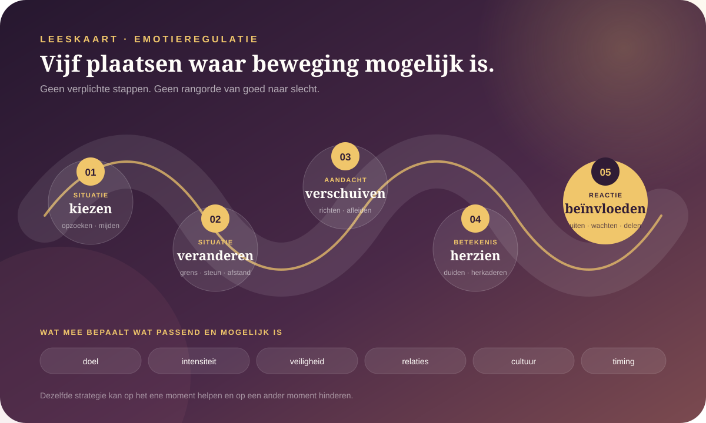

De kern in gewone taal
Reguleren is niet minder voelen.
Emotieregulatie is alles wat we doen om te beïnvloeden welke emotie ruimte krijgt, wanneer ze opkomt, hoe intens ze wordt en hoe we ermee handelen. Dat kan bewust of automatisch gebeuren, alleen of samen met iemand. Het doel is niet voortdurend kalm of positief zijn. Het gaat om voldoende bewegingsruimte tussen wat je voelt en wat je vervolgens doet.
Betekenis, lichaam, aandacht, uitdrukking en handelingsimpuls bewegen samen, maar niet altijd gelijk.
Afleiding, herwaardering, aanvaarding of onderdrukking kunnen iets anders doen naargelang doel en context.
Veiligheid, relaties, cultuur, macht en omstandigheden beïnvloeden wat iemand kan voelen en tonen.
“Te veel” en “niets” kunnen allebei bescherming zijn.
Soms komt een emotie sneller op dan je woorden kunt vinden. Je merkt hitte, druk, tranen, verstarring of de drang om onmiddellijk te reageren. Op andere momenten blijft er vooral afstand: je weet dat iets belangrijk is, maar voelt nauwelijks wat. Geen van beide ervaringen vertelt op zichzelf wat er psychologisch aan de hand is.
Ook niet voelen is niet noodzakelijk afwezigheid van emotie. Aandacht kan vernauwen, gevoelens kunnen moeilijk te onderscheiden zijn of iemand kan geleerd hebben dat tonen onveilig, nutteloos of ongewenst is. Andersom betekent intens voelen niet automatisch dat iemand “slecht gereguleerd” is. De situatie kan werkelijk overweldigend, onrechtvaardig of bedreigend zijn.
Een emotie is echt als ervaring. De eerste verklaring die je eraan geeft, hoeft daarom nog niet volledig te zijn.
Waar in het proces kun je iets beïnvloeden?
James Gross onderscheidt vijf families van regulatie. Ze beschrijven mogelijke aangrijpingspunten, niet vijf verplichte stappen en ook geen rangorde van goed naar slecht.

Situatie kiezen
Iets opzoeken, uitstellen of vermijden omdat je verwacht wat het met je zal doen.
Situatie veranderen
Een grens stellen, informatie vragen, afstand nemen of steun toevoegen.
Aandacht verschuiven
Je aandacht richten, afleiden of tijdelijk vernauwen om iets hanteerbaar te maken.
Betekenis herzien
Onderzoeken of een andere, eveneens geloofwaardige interpretatie mogelijk is.
Reactie beïnvloeden
Ademen, bewegen, uiten, onderdrukken, delen of wachten wanneer de emotie al actief is.
Je kunt een emotie niet altijd kiezen of snel doen verdwijnen. Soms is de meest passende regulatie: voelen wat er is, veiligheid zoeken en geen onomkeerbare beslissing nemen zolang de golf hoog staat.
Wat weten we redelijk goed?
Regulatie bestaat uit meerdere strategieën
Onderzoek onderscheidt onder meer aanvaarding, probleemoplossing, herwaardering, afleiding, vermijden, piekeren en onderdrukken. Ze grijpen op verschillende momenten aan en beïnvloeden ervaring, gedrag, lichaam en relaties niet noodzakelijk op dezelfde manier.
Lees Gross’ uitgebreide procesmodel →Piekeren en vermijden hangen sterker samen met psychische klachten
Meta-analyses vinden over uiteenlopende klachtengroepen duidelijke verbanden met vooral piekeren, vermijden en onderdrukken. Zulke verbanden vertellen niet automatisch wat oorzaak en gevolg is, en ze mogen niet worden gebruikt om iemand op basis van één gewoonte te diagnosticeren.
Bekijk de meta-analyse van Aldao en collega’s →Flexibiliteit lijkt belangrijker dan één perfecte techniek
Een bruikbaar regulatierepertoire vraagt dat je context opmerkt, meerdere reacties beschikbaar hebt en leert van het effect. Wegkijken kan op het ene moment vermijden zijn en op een ander moment precies genoeg ruimte geven om later terug te keren.
Lees Bonanno en Burton over regulatieflexibiliteit →Preciezer benoemen kan meer keuzeruimte geven
Emotiedifferentiatie betekent bijvoorbeeld onderscheid maken tussen irritatie, teleurstelling, schaamte en angst in plaats van alleen “slecht”. Meta-analyses vinden bescheiden verbanden met welzijn en minder schadelijk regulatiegedrag. Dat maakt benoemen veelbelovend, maar niet tot een universele kalmeringstechniek.
Bekijk de meta-analyse over emotiedifferentiatie →Dezelfde strategie kan helpen én hinderen.
Te eenvoudig
“Onderdrukken is altijd ongezond.”
Voortdurend gevoelens verbergen kan kosten hebben, maar tijdelijke terughoudendheid kan veiligheid, concentratie of sociale afstemming dienen. Culturele context verandert bovendien de samenhang met welzijn.
Bekijk de cultuurvergelijkende meta-analyse →Te eenvoudig
“Herwaarderen is altijd beter.”
Een andere interpretatie zoeken kan helpen wanneer die geloofwaardig is. Bij werkelijk onrecht kan voortdurend herkaderen ook de aandacht afleiden van grenzen, actie of verandering van de situatie.
Te eenvoudig
“Mijn gevoel bewijst dat mijn gedachte klopt.”
Een gevoel kan belangrijke informatie dragen zonder dat iedere voorspelling of interpretatie volledig juist is. Ervaring erkennen en betekenis onderzoeken kunnen naast elkaar bestaan.
Te eenvoudig
“Ik moet dit alleen kunnen.”
Regulatie is ook relationeel. Een rustige stem, erkenning, materiële veiligheid of iemand die helpt ordenen kan mogelijkheden openen die alleen niet beschikbaar waren.
Open wetenschappelijke vraag
Wat is een emotie eigenlijk?
Basisemotiebenaderingen zoeken deels aangeboren emotionele systemen en terugkerende patronen. Constructivistische modellen leggen meer nadruk op voorspelling, lichaamssignalen, concepten, taal en context. Sociale en culturele benaderingen tonen daarnaast hoe emoties in interacties worden gevormd. Geen enkel model verklaart momenteel ieder niveau overtuigend.
Wat beweegt er — en wat vraagt het van je?
Richard Lazarus
Welke betekenis kreeg de situatie?
Emoties hangen samen met hoe een gebeurtenis wordt ingeschat: verlies, dreiging, onrecht, uitdaging of iets anders. Dezelfde gebeurtenis hoeft daarom niet bij iedereen hetzelfde te bewegen.
Nico Frijda
Wat wil de emotie je laten doen?
Een emotie bevat vaak een actietendens: naderen, aanvallen, vluchten, herstellen of verdwijnen. Die impuls is informatie, maar geen opdracht die je verplicht moet volgen.
Batja Mesquita
Wat gebeurt er tussen jullie?
Emoties ontstaan en veranderen ook in relaties en culturen. Wat gepast, zichtbaar of zelfs voelbaar wordt, hangt mee af van de wereld waarin iemand leeft.
Baruch Spinoza
Vergroot dit je vermogen om te handelen?
Spinoza zag affecten als veranderingen in onze kracht tot handelen. Vrijheid is niet niets meer voelen, maar beter begrijpen waardoor je bewogen wordt en wat je mogelijkheden vergroot of verkleint.
Lazarus, Frijda en Mesquita bieden wetenschappelijke modellen die zelf ook worden onderzocht en bijgesteld. Spinoza biedt een filosofische lens, geen empirische behandeling.
Wil je deze route niet alleen begrijpen, maar uittekenen?
In de Speelhal kies je één recent, hanteerbaar moment en onderzoek je rustig wat er buiten je gebeurde, wat je lichaam deed, welke betekenis ontstond en waar misschien bewegingsruimte zat. Je krijgt geen score of conclusie over wie je bent.
Situatie
Wat zou een camera hebben gezien?
Lichaam
Wat merkte je werkelijk op?
Betekenis
Wat leek er op het spel te staan?
Ruimte
Wat was mogelijk vóór, tijdens en na de golf?
De werkbank vraagt uitdrukkelijk om een klein genoeg moment. Bij overspoeling, verdoving of onveiligheid is stoppen zinvoller dan de oefening afwerken.
Spoel even terug
Leg één veilig te bekijken scène in acht haltes op de montagetafel. Je concept blijft lokaal en jij kiest wat er eventueel naar Mijn spoor gaat.
Grens van zelfonderzoek
Wanneer ondersteuning passender is.
Zoek professionele hulp wanneer emoties, verdoving, impulsief gedrag, middelengebruik of piekeren je dagelijks functioneren of veiligheid langdurig verstoren. Een huisarts of klinisch psycholoog kan mee beoordelen wat nodig is. Bij onmiddellijk gevaar voor jezelf of iemand anders bel je in België 112. Dit dossier is geen diagnose of behandeling.
Bronnen en verdere verdieping
- ProcesmodelGross — Emotion regulation: Current status and future prospects
Uitgebreid procesmodel met fasen van identificatie, keuze en uitvoering.
- Meta-analyseAldao, Nolen-Hoeksema & Schweizer — Emotion-regulation strategies across psychopathology
Vergelijkt zes strategieën over 114 studies; vooral verbanden, geen simpele causaliteit.
- Actueel breed overzichtClamor, Lincoln & Schulze — Emotion regulation in mental disorders
Multilevel meta-analyse van 619 studies; toont brede patronen én verschillen tussen klachtengroepen.
- RegulatieflexibiliteitBonanno & Burton — Regulatory flexibility
Contextgevoeligheid, repertoire en leren van feedback als drie kerncomponenten.
- Cultuur · meta-analyseChen e.a. — Emotion regulation and mental health across cultures
Laat zien dat culturele dimensies de verbanden met herwaardering en onderdrukking mee beïnvloeden.
- EmotiedifferentiatieSeah & Coifman — Emotion differentiation and behavioral dysregulation
Meta-analyse met een bescheiden verband tussen preciezer onderscheiden en minder schadelijk gedrag.
- Relaties en cultuurBoiger & Mesquita — The construction of emotion in interactions, relationships, and cultures
Emotie bekeken als dynamisch en sociaal proces.
- Neurowetenschappelijke tegenstemLeDoux — The deep history of survival behaviours and consciousness
Maakt onderscheid tussen verdedigingscircuits en bewuste angst.
- Filosofische verdiepingStanford Encyclopedia — Spinoza on the emotions
Over affecten, handelen, passiviteit en vrijheid.
Lees ook het Atlas-kompas, ons bronnenbeleid en de officiële Belgische informatie over geestelijke gezondheidszorg en 112.